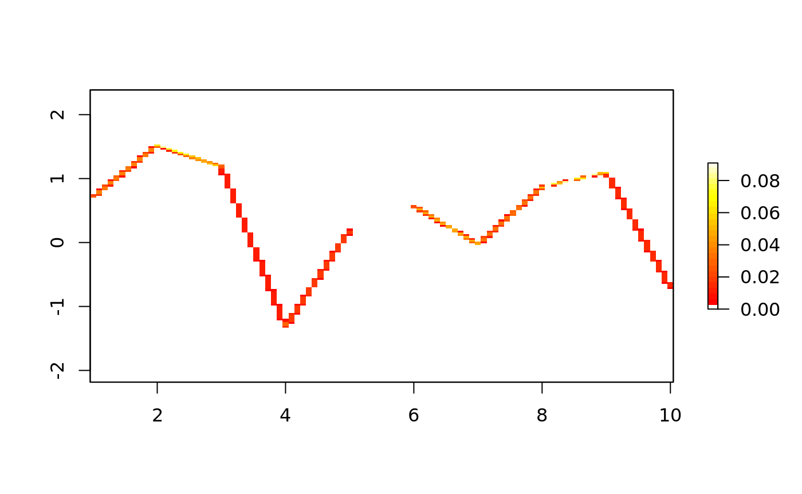
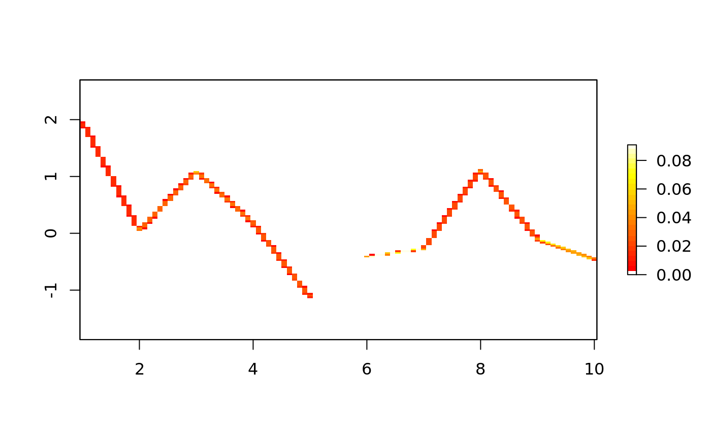
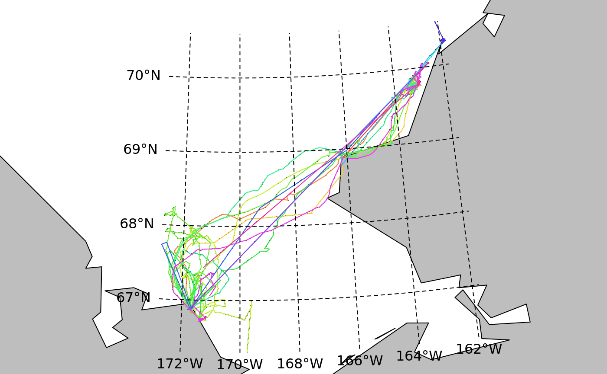

Basic use of the trip package.
library(trip)
d <- data.frame(x=1:10,y=rnorm(10), tms=Sys.time() + 1:10, id=gl(2, 5))
sp::coordinates(d) <- ~x+y
## a projection should always be set, is it WGS84 or NAD83 . . .
sp::proj4string(d) <- sp::CRS("+proj=laea +ellps=sphere")
tr <- trip(d, c("tms", "id"))
summary(tr)##
## Object of class trip
## tripID ("id") No.Records startTime ("tms") endTime ("tms")
## 1 1 5 2019-04-11 07:25:14 2019-04-11 07:25:18
## 2 2 5 2019-04-11 07:25:19 2019-04-11 07:25:23
## tripDuration tripDistance meanSpeed maxSpeed
## 1 4 secs 12.720950 11448.855 16467.87
## 2 4 secs 4.878552 4390.697 6444.28
##
## Total trip duration: 8 seconds (0 hours, 8 seconds)
##
## Derived from Spatial data:
##
## Object of class SpatialPointsDataFrame
## Coordinates:
## min max
## x 1.000000 10.000000
## y -1.512501 2.997241
## Is projected: TRUE
## proj4string : [+proj=laea +ellps=sphere]
## Number of points: 10
## Data attributes:
## tms id
## Min. :2019-04-11 07:25:14 1:5
## 1st Qu.:2019-04-11 07:25:16 2:5
## Median :2019-04-11 07:25:18
## Mean :2019-04-11 07:25:18
## 3rd Qu.:2019-04-11 07:25:20
## Max. :2019-04-11 07:25:23
Plot of a rasterized version of the trip, by default this is a map of time-spent.
Plot the walrus tracks on a map.

## Loading required package: sp## Checking rgeos availability: TRUE## rgdal: version: 1.4-3, (SVN revision 828)
## Geospatial Data Abstraction Library extensions to R successfully loaded
## Loaded GDAL runtime: GDAL 2.4.0, released 2018/12/14
## Path to GDAL shared files: /usr/share/gdal
## GDAL binary built with GEOS: TRUE
## Loaded PROJ.4 runtime: Rel. 5.2.0, September 15th, 2018, [PJ_VERSION: 520]
## Path to PROJ.4 shared files: (autodetected)
## Linking to sp version: 1.3-1data(wrld_simpl)
world <- sp::spTransform(subset(wrld_simpl, coordinates(wrld_simpl)[,2] > 0), proj4string(walrus818))
p <- par(xpd = NA, mar = rep(0.5, 4))
plot(walrus818, pch = ".")
plot(world, add = TRUE, col = "grey")
lines(walrus818)
llgridlines(walrus818); par(p)